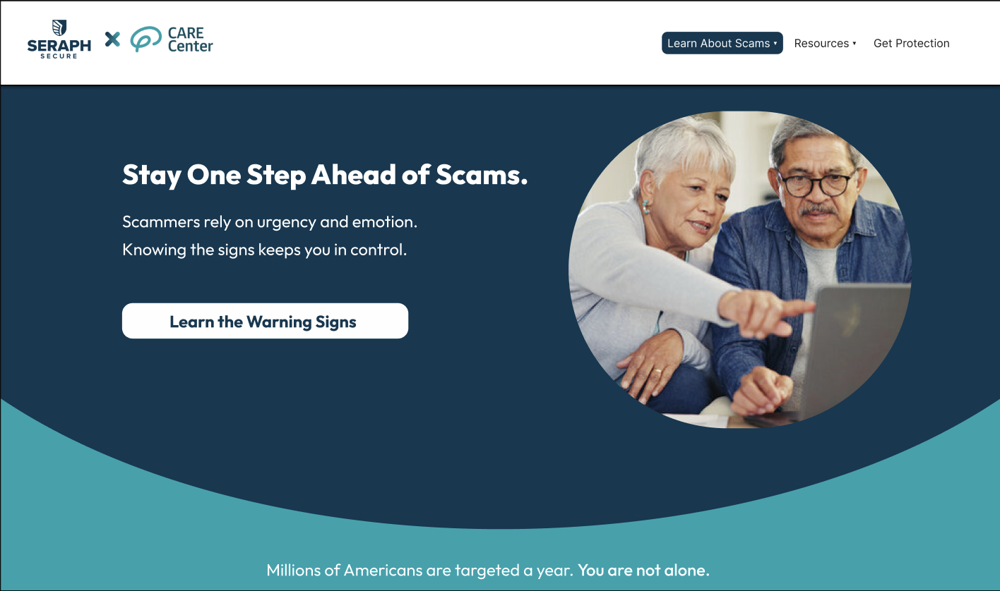
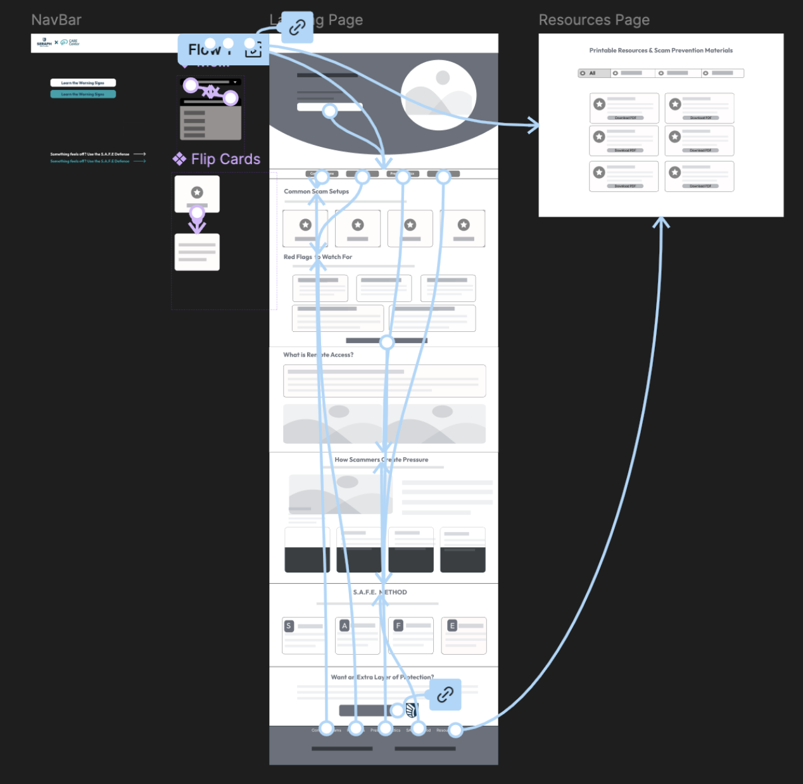
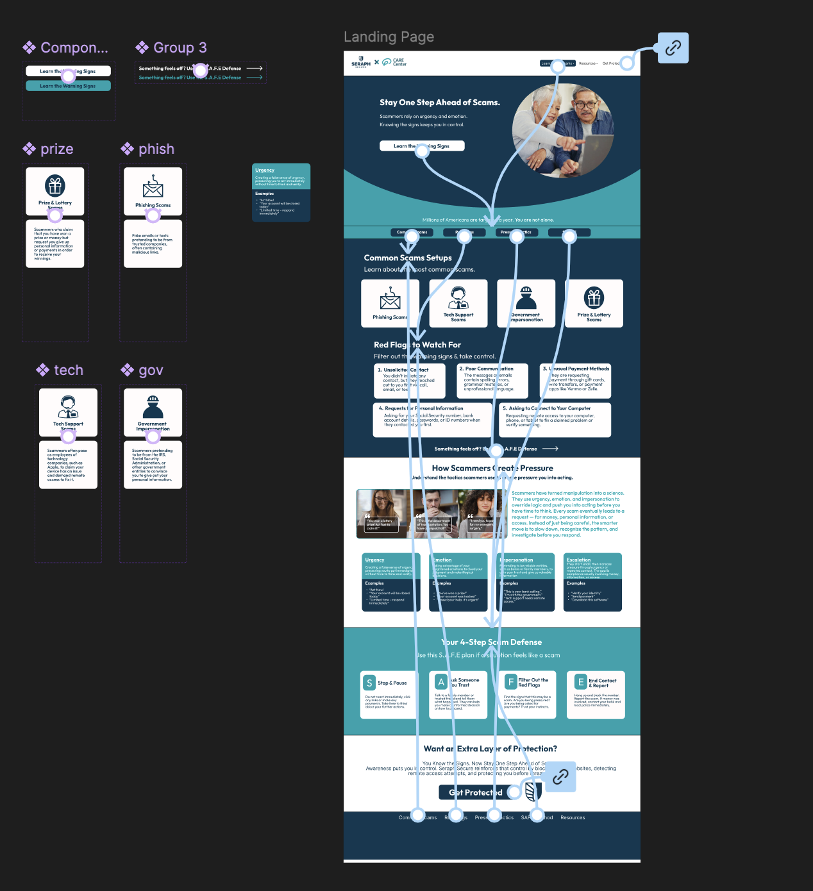
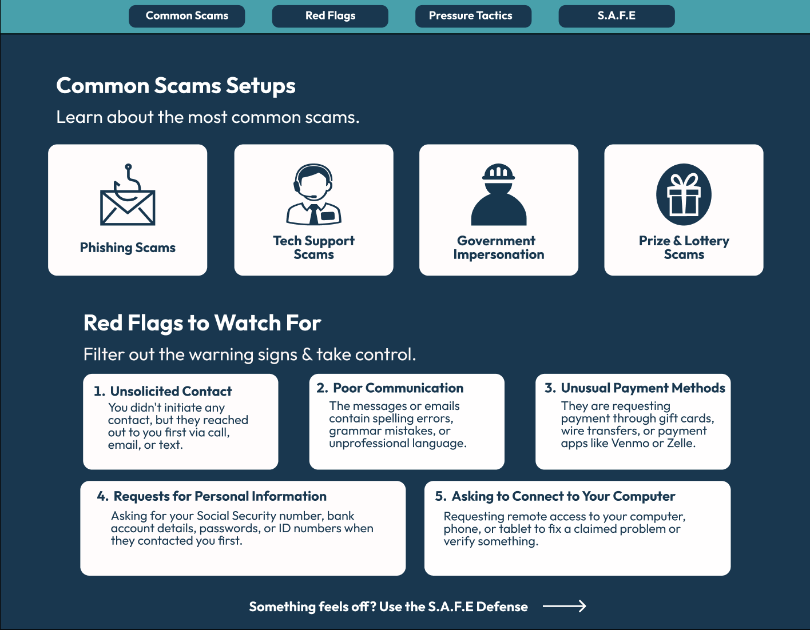
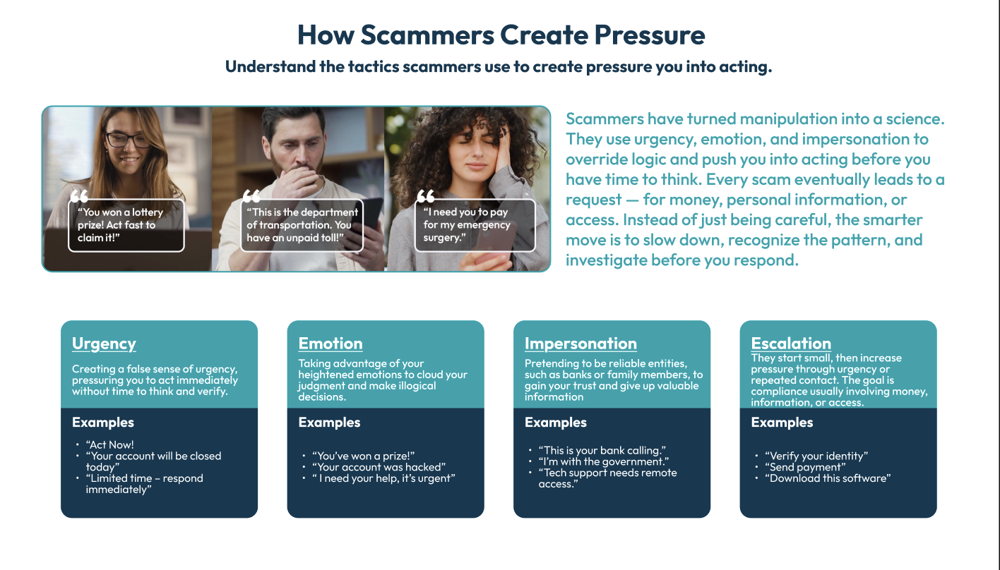
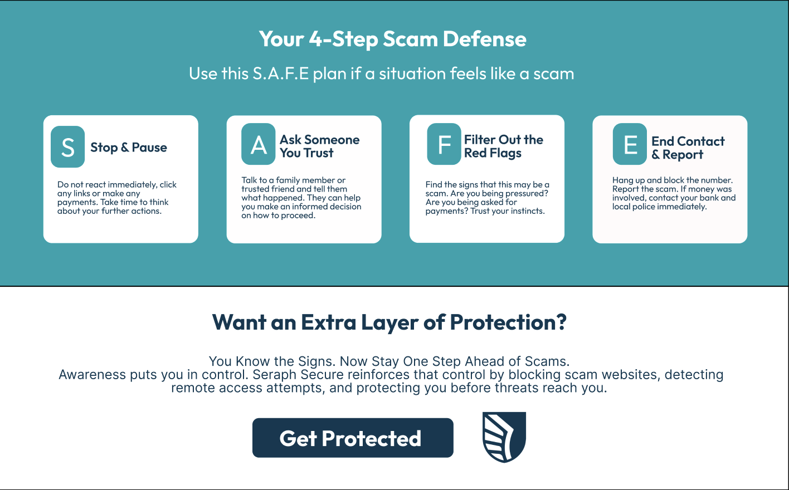

Seraph Secure × UGA CARE
Designing a free, one-page scam prevention website to help older adults recognize threats, build confidence online, and take action — in partnership with Seraph Secure and the UGA CARE Center.
View Prototype →
Problem
Older adults are the most victimized group in internet crime. In 2024, individuals 60+ filed over 147,000 complaints with the FBI's IC3, reporting $4.885 billion in losses — a 43% increase from the previous year. The average loss per victim was $83,000.
Despite the severity, most existing scam education relies on technical jargon, fear-based messaging, or social media delivery — overlooking that many older adults prefer printed materials and trusted, locally grounded guidance. Seraph Secure and the UGA CARE Center needed a resource that could reach this audience in a way that felt simple, supportive, and stigma-free.
Mission
Create an accessible, one-page educational website that empowers older adults to recognize and prevent scams — designed to be simple enough to use without tech experience, and adaptable into printable materials like one-pagers, stickers, and fridge magnets.
- Present scam awareness through the S.A.F.E. framework (Stop and Pause, Ask Someone You Trust, Filter Out the Red Flags, End Contact & Report) — actionable steps users can internalize and recall
- Prioritize Seraph Secure and UGA CARE branding with high-contrast colors, large text, and layouts that reduce cognitive overload for seniors
- Design for both digital and physical distribution — the site content should translate seamlessly to printable resources
- Build a platform that families and caregivers can share with loved ones to spread awareness without stigma
Process
Research & Needfinding
Researched both stakeholders — Seraph Secure (anti-scam software founded by Kitboga) and the UGA CARE Center (cognitive aging research and education). Studied UX best practices for older adults, then conducted interviews with 4 individuals (ages 61–81) and UGA CARE staff. Paired findings with FBI IC3 secondary research showing $4.885B in losses for adults 60+ in 2024.
Personas, User Flows & Journey Maps
Built 3 user personas — Matthew (76, scam victim seeking education), Debbie (68, wants to protect friends and family), and Audrey (42, caregiver for her parents). Mapped distinct user flows showing how each persona navigates the one-page site, and created user journey maps to capture their emotional states, pain points, and moments of confidence at each stage.
Lo-Fi to Hi-Fi Iteration
Started with lo-fi wireframes mapping the full page flow — NavBar, Landing Page, and Resources Page with user flow arrows. Built reusable Figma components (flip cards for scam types, CTAs, navigation elements) and iterated into a high-fidelity prototype with Seraph Secure's dark teal/cyan branding.
User Testing & Iteration
This is our current phase. We conducted initial moderated interviews applying the S.A.F.E. framework to realistic scam scenarios. Based on findings, we will be increasing font sizes, reducing information density, adding interactive video explanations for each S.A.F.E. step, and creating printable PDF versions for physical distribution at senior centers.
Wireframing
We started with lo-fi wireframes mapping the full user flow — from the navigation bar through each content section, with arrows showing how users move through the page. These were then iterated into high-fidelity prototypes merging Seraph Secure and UGA CARE branding with reusable Figma components.


Current Design
The deliverable is a free, one-page educational website built in partnership with Seraph Secure and the UGA CARE Center. The site walks users through common scam setups, red flags to watch for, remote access safety, how scammers create pressure, and a 4-step S.A.F.E. defense method — all in a single, scroll-friendly page.
Design decisions centered on the target audience: Seraph Secure and UGA CARE branding colors with high-contrast ratios, large readable text, generous whitespace to reduce cognitive overload, and content structured into digestible sections with clear visual hierarchy.
View Figma Prototype →Next Steps
- Building out the Resources page with curated links and support information
- Developing content for resources — printable one-pagers, stickers, and fridge magnets for physical distribution
- Exploring campaign strategies to reach older adults through senior centers, libraries, and community groups
- Conducting additional research and user testing with UGA CARE Center participants to continue refining the experience


